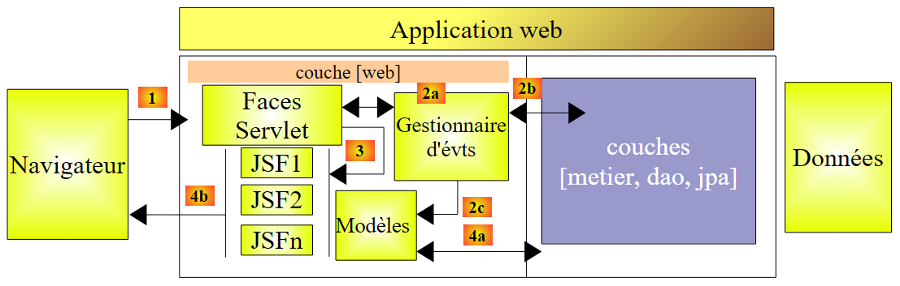
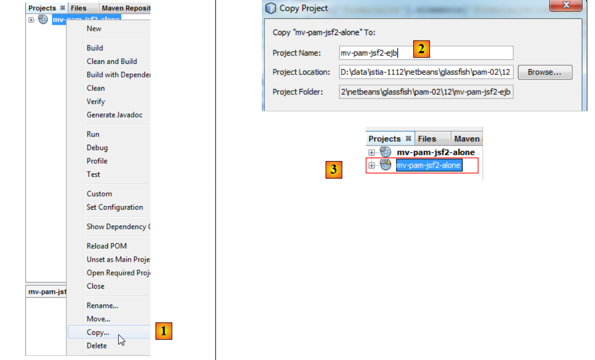
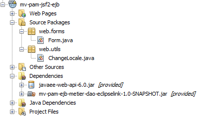
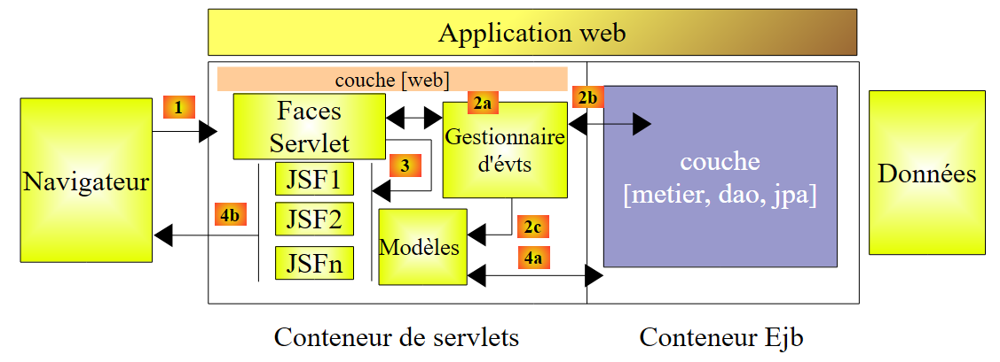
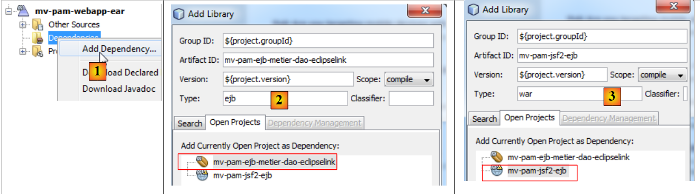
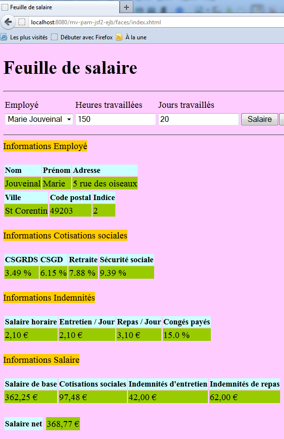

11. Versión 6 - Integración de la capa web en una arquitectura JSF/EJB de tres capas
11.1. Arquitectura de la aplicación
La arquitectura de la aplicación web anterior era la siguiente:
 |
Sustituimos la capa [de negocio] simulada por las capas [de negocio, DAO, JPA] implementadas por EJB en la sección 7.1:
 |
11.2. El proyecto de NetBeans para la capa web
El proyecto NetBeans para la versión web 2 se crea copiando el proyecto anterior:
 |
- [1]: Copia el nuevo proyecto y pégalo en la pestaña [Proyectos],
- [2]: asígnele un nombre y configure su carpeta,
- [3]: el proyecto se ha creado,
El nuevo proyecto tiene el mismo nombre que el anterior. Vamos a cambiarlo:
 |
- [4]: Cambia el nombre del proyecto,
- [5]: Cambia tanto el nombre como el artifactID.
Tenemos que realizar algunos cambios para adaptar esta capa web a su nuevo entorno: la capa [business] simulada debe sustituirse por la capa [business, DAO, JPA] del servidor creado en la sección 7.1. Para ello, hacemos dos cosas:
- eliminamos los paquetes [exception, business, jpa] que estaban presentes en el proyecto anterior.
- Para compensar esta eliminación, añadimos el proyecto del servidor EJB creado en la sección 7.1 a las dependencias del proyecto web.
 |
- En [1], añadimos una dependencia al proyecto,
- En [2], seleccionamos el proyecto Maven para la capa [business]. En [3], especificamos su tipo, y en [4], su ámbito. El ámbito se establece en `provided` para indicar que será suministrado al módulo web por su entorno de ejecución. Veremos en breve que será suministrado por una aplicación empresarial,
- en [5], se ha añadido la dependencia.
El archivo [pom.xml] queda entonces así:
private boolean viewInfosIsRendered;
Ahora podemos eliminar de la capa [business] los paquetes que ya no son necesarios:
 |
También tenemos que modificar el código del bean [Form.java]:
<dependencies>
<dependency>
<groupId>${project.groupId}</groupId>
<artifactId>mv-pam-ejb-metier-dao-eclipselink</artifactId>
<version>${project.version}</version>
<scope>provided</scope>
<type>ejb</type>
</dependency>
<dependency>
<groupId>javax</groupId>
<artifactId>javaee-web-api</artifactId>
<version>6.0</version>
<scope>provided</scope>
</dependency>
</dependencies>
La línea 7 instanciaba la capa [business] simulada. Ahora debe hacer referencia a la capa [business] real. El código anterior queda así:
public class Form {
public Form() {
}
// business layer
private IMetierLocal metier=new Metier();
// form fields
...
Línea 7: La anotación @EJB indica al contenedor de servlets —que ejecutará la capa web— que inyecte el EJB que implementa la interfaz local IMetierLocal en el campo de negocio de la línea 8.
¿Por qué la interfaz local IMetierLocal en lugar de la interfaz IMetierRemote? Porque la capa web y la capa EJB se ejecutan en la misma JVM:
 |
Las clases del contenedor de servlets pueden hacer referencia directamente a las clases EJB del contenedor EJB.
Eso es todo. Nuestra capa web está lista. La transformación fue sencilla porque nos habíamos encargado de simular la capa [de negocio] utilizando una clase que se ajustaba a la interfaz IMetierLocal implementada por la capa [de negocio] real.
11.3. El proyecto NetBeans para la aplicación empresarial
Una aplicación empresarial permite el despliegue simultáneo de la capa [web] y la capa EJB de una aplicación en un servidor de aplicaciones, en el contenedor de servlets y el contenedor de EJB, respectivamente.
Procedemos de la siguiente manera:
 |
- en [1], creamos un nuevo proyecto
- en [2], seleccionamos la categoría [Maven]
- en [3], seleccionamos el tipo [Aplicación empresarial]
- en [4], le ponemos nombre al proyecto
 |
- En [5], seleccionamos Java EE 6
- En [6], un proyecto empresarial puede incluir hasta dos tipos de módulos:
- un módulo EJB
- un módulo web
Al crear el proyecto empresarial, puede solicitar la creación de estos dos módulos, que inicialmente estarán vacíos. Un proyecto empresarial se utiliza únicamente para implementar los módulos que contiene. Más allá de eso, es un caparazón vacío. Aquí, queremos implementar:
- un módulo web existente [mv-pam-jsf2-alone]. Por lo tanto, no es necesario crear un nuevo módulo web.
- un módulo EJB existente [mv-pam-ejb-metier-dao-eclipselink]. Aquí tampoco es necesario crear uno nuevo.
En [6], creamos un proyecto empresarial sin módulos. Añadiremos sus módulos web y EJB más adelante.
- En [7], se han creado dos proyectos Maven. El proyecto empresarial es el que tiene la extensión .ear. El otro proyecto es un proyecto Maven padre del primero. No nos ocuparemos de él.
Añadimos el módulo web y el módulo EJB al proyecto empresarial:
 |
- En [1], añade una nueva dependencia,
- en [2], añade el proyecto EJB [mv-pam-ejb-metier-dao-eclipselink]. Ten en cuenta su tipo EJB,
- en [3], añade el proyecto web [mv-pam-jsf2-ejb]. Ten en cuenta que su tipo es war.
El archivo [pom.xml] queda entonces así:
public class Form {
public Form() {
}
// business layer
@EJB
private IMetierLocal metier;
// form fields
Antes de implementar la aplicación empresarial [mv-pam-webapp-ear], asegúrese de que la base de datos MySQL [dbpam_eclipselink] existe y está poblada. Una vez hecho esto, podemos implementar la aplicación empresarial [mv-pam-webapp-ear]:
 |
- en [1], la aplicación empresarial está implementada
- en [2], la aplicación empresarial [mv-pam-webapp-ear] se ha implementado correctamente.
En el navegador, aparece la siguiente página:
 |
- en [1], la URL solicitada
- en [2], la lista de empleados se ha rellenado con las entradas de la tabla [Employees] de la base de datos dbpam.
Se invita al lector a repetir las pruebas de la versión web 1. A continuación se muestra un ejemplo de la ejecución:
